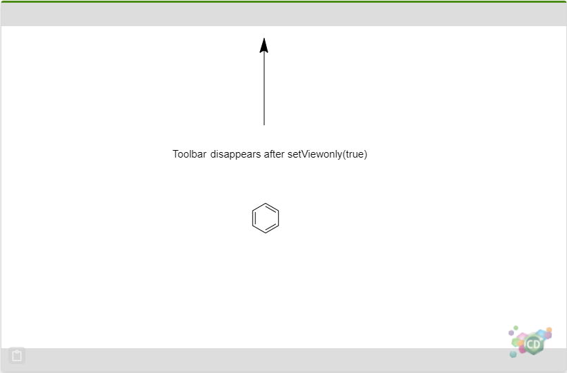

Managing Document
Managing the Drawings
clear
isBlankStructure
The clear API removes all objects from the document. After the document is cleared, the isBlankStructure API returns true.
Managing the Size of the Canvas or Drawings
fitToContainer
getCanvasSize
setCanvasSize
The previous chapter
Understanding ChemDraw JS View introduced the concept of ChemDraw JS container, toolbar, workspace and canvas. ChemDraw JS exposes APIs to manage the size of the ChemDraw JS canvas. The ChemDraw JS workspace and toolbar will fill the space within the container.
It is the responsibility of the host application to manage the size of the ChemDraw JS container. After the size of the container is changed, the size or the scale ratio of the canvas may need to be updated accordingly in some scenarios. So that the drawings on the canvas could be displayed properly.
The fitToContainer API will resize or scale the canvas to fit the container which depends on the view mode of the ChemDraw JS instance.
If the PreservePageInfo mode is enabled, after loading an existing ChemDraw document, ChemDraw JS renders the document at the same scale ratio with the ratio used when it was saved. It means that the canvas/document may not be fully visible in the workspace, and scrollbars may be visible.
In this mode, the scale ratio of the canvas is adjusted after the fitToContainer API is called. Then the whole canvas is visible within the container and no scrollbar is visible. However, this does not affect the bounding box of the page in the resulting CDXML.
If the PreservePageInfo mode is disabled, after the document is loaded, it is still rendered at the same scale ratio with the ratio used when it was saved. The scrollbar also shows when necessary, but the grey area of the workspace is actually not visible.
In this mode, the scale ratio is adjusted to make all drawings visible after the fitToContainer API is called. The bounding box of the page in the resulting CDXML is also altered.
Getter and Setter for Canvas Size
The fitToContainer API provides an easy way to make the canvas fit the ChemDraw JS container that is managed by the host application. If necessary, the host application can set or get the canvas size directly.
This is helpful when the host application wants to make the container fit to the drawings, so that all the drawings can be visible and be rendered at the same ratio with the one used when it was saved. To achieve this goal, the host application need to get the size of the canvas first and then resize the ChemDraw JS container.
The setCanvasSize API can be used if the host application wants to change the canvas size (only meaningful if Preserve PageInfo Mode is enabled). Also this is useful for testing purpose.
getDocumentName
setDocumentName
The CDX/CDXML data contains the name of the document. The name in CDX/CDXML is set when the file is saved in ChemDraw Desktop. ChemDraw JS exposes the getter and setter for the document name so that the host application can access this metadata.
Managing the State of the Document
getErrors
ChemDraw has the intelligence to detect chemical errors. You can also configure the types of errors to be detected. Please refer to
Configuring ChemDraw JS for details about how to enable or disable them.
If there are any errors in the drawing, users can see a red box over the error. Also, a tool-tip with an error message is displayed when the mouse cursor is placed over the error.
The getErrors API enables host applications to check if the current drawings contain any chemical errors. The host application can then implement its own way to notify the end user.
isSaved
markAsSaved
The ChemDraw JS library does not have the capability to persist data. If the host application needs to save the ChemDraw JS data, it is important to know if the ChemDraw JS instance contains any change not saved since last saving.
After a ChemDraw JS instance is created and attached to the host web page, if the result of isSaved is false which means the current data is never saved.
Only after the markAsSaved API is called, then the isSaved API returns the value as 'true'.
After you make any new changes to the document, the isSaved API returns the value as 'false'.
setContentChangedHandler
The setContentChangedHandler API provides another option to the host application to get a real-time notification about any changes in the document. Based on this information, the host application can update the data to other dependent applications.
setViewOnly
ChemDraw JS supports a viewonly state in which the end user can only view the drawings and nothing on the canvas could be altered. Also, the toolbar is hidden in this viewonly mode.
setViewOnly(false)
setViewOnly(true)

Utilities
getMolecularWeight
nameToStructure
structureToName
ChemDraw JS provides several utility APIs as mentioned above (some of them may rely on ChemDraw Web Service). These APIs does not depend on the drawings on the canvas, and after they are called, the drawings on the canvas are not affected either.
These APIs offer the host application more chemical functions so that the host application can process some chemical data with ChemDraw's chemical intelligence but without affecting the canvas.